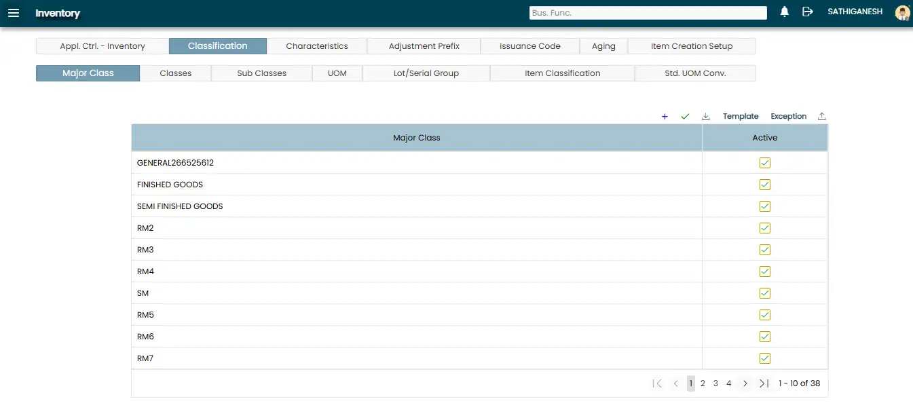

<div data-category="Inventory Control" data-title="Major Class" data-updated="January 27, 2026" data-contributors="RoadmapIT" data-breadcrumb="Home,Inventory Control,Major Class">
  <div class="page-content">
    <p>A major class is a way of grouping inventory items that share common features, such as type, size, color, material, etc.</p>
    <p>User can use this screen to create a major class, which is a category of inventory items that have similar characteristics. Once user has created a major class, user cannot change or delete its description if it has any subcategories.</p>
    <p>The user can only change or delete the description of a major class if it has no subcategories. The user can also view the list of all major classes and their subcategories on this screen.</p>
    <h5>Navigation path:</h5>
    <p class="fs-6">Supply Chain Management \ Inventory \ Setup \ Setup – Inventory \ Classification \ Major Class</p>
    
    <ul style="list-style-type: none; align-content: center">
      <li class="mouse-icon">
        Click
        <i class="bi bi-plus fs-4 mx-2 text-primary"></i>
        button to create a new Major Class
      </li>
      <li class="mouse-icon">Enter the Major Class</li>
      <li class="mouse-icon">Click on Template button to download the template for Major class</li>
      <li class="mouse-icon">
        <i class="bi bi-upload fs-5 mx-1 text-muted"></i>
        Upload button helps to upload the files.
      </li>
      <li class="mouse-icon">
        <i class="bi bi-download fs-5 mx-1 text-muted"></i>
        Download button shows the details in decided format such as excel, CSV, PDF.
      </li>
      <li class="mouse-icon">
        Save
        <i class="bi bi-check-lg fs-4 mx-1 text-success"></i>
        the Major Class & Finally Check the Active Flag.
      </li>
    </ul>
  </div>
</div>
